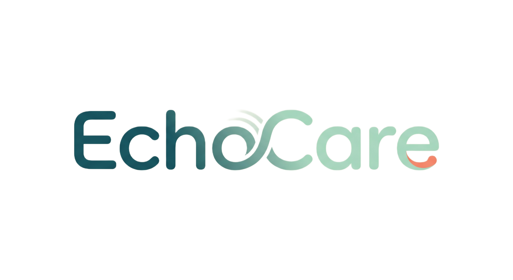

语音情绪陪伴助手
今天
先听见自己
用一段语音记录此刻状态，EchoCare 会帮你整理情绪、压力和适合的陪伴内容。
30-Day Care Profile
近 30 天心理画像
完成几次记录后，这里会生成近 30 天情绪模式与调节建议。
本地规则
最近记录
Voice Journal
今天想说些什么？
当前版本使用本地规则模拟 AI 分析；接入 DeepSeek 时由后端安全转发。
Emotion Insight
情绪分析
还没有分析结果
完成一次语音或文字记录后，这里会显示情绪、压力、关键词和温和建议。
主要情绪
--
--
今日建议
Care Recommendations
歌单与书籍
收藏喜欢的歌曲后，EchoCare 会根据不同情绪下的音乐偏好调整后续推荐。
情绪歌单
多类型Echo
今日书信
等待分析
完成一次记录后，这里会出现适合当下情绪的一段书籍摘句或灵感摘句。
当你完成一次记录后，这里会生成一段适合当前情绪的原创安慰文字。
Saved Care
收藏
保存喜欢的歌曲和书信后，EchoCare 会逐步看见你在不同情绪下真正需要的陪伴方式。
收藏歌单
收藏书摘
Psychology Toolkit
心理调节
这里会根据最近记录和近 30 天画像推荐更贴近你的心理学调节知识。
Weekly Trends
一周趋势
暂无记录
完成几次记录后，这里会生成本周情绪和压力概览。
高频主题
UX Measurement
体验测量
提交问卷后生成用户体验测量摘要。